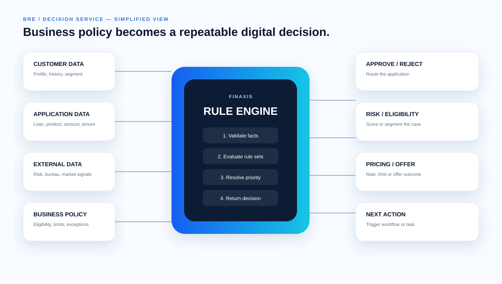

Decision logic, workflow, integration and enterprise engineering — brought together around real financial-services processes.
Business rules, decision tables, priorities, eligibility, exceptions, rule services and controlled change.
Move repeatable policy decisions from manual interpretation into consistent digital outcomes.
Connect automated decisions with approvals, human review, exceptions, tasks and downstream actions.
Expose decision capabilities through integration layers that fit existing banking and enterprise ecosystems.
Make decision logic easier to test, explain, monitor and evolve with appropriate controls.
Design scalable services with security, observability, resilience and maintainability in mind.
Facts enter. Rules are evaluated. A decision is produced. The result becomes an action — and the process can continue.

When business logic changes often, putting every rule directly into application code can make change expensive. A decision layer creates a clearer boundary.
Application → decision service → outcome → workflow. The application does not need to own every business rule.
We'll help turn them into an architecture that can run.